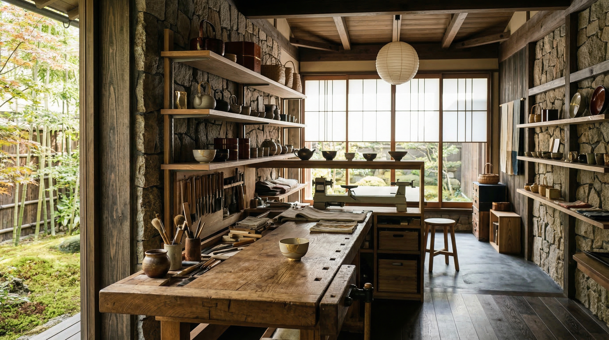
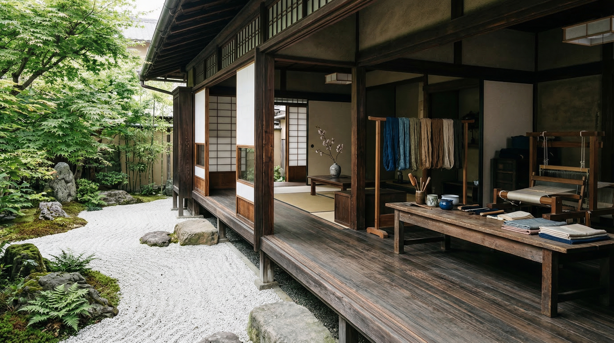
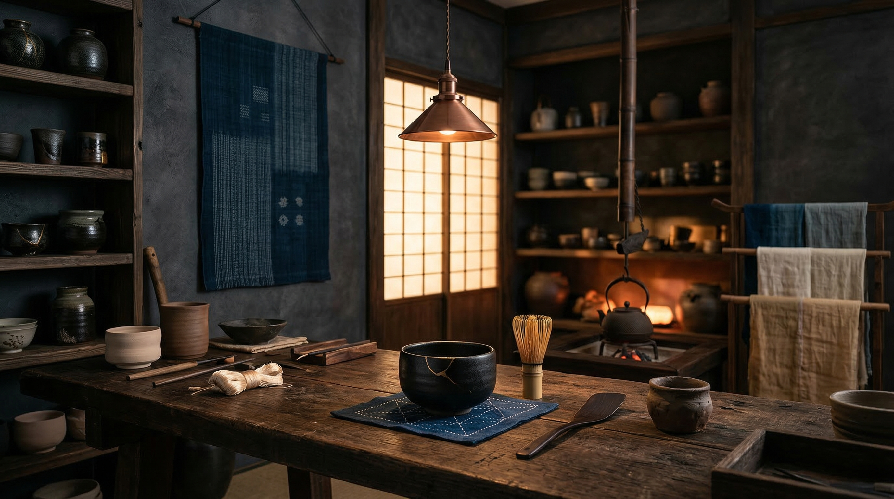

業種が伝わる文脈
旅館、茶寮、工芸、文化施設など、 来訪者が期待する情報を 最初に確認できる構成です。

auto_awesome Ryokan / Tea Salon / Craft Brand
旅館、茶寮、工芸ブランド、文化施設の価値を、写真、価格帯、来店前の不安解消、問い合わせ導線まで一続きで整えます。余白を活かしながら、予約・来店・商品相談へ迷わず進める企業サイトです。
Site Strategy
和モダンの印象を保ちながら、 初めて訪れた人が予約、来店、 商品相談へ進める情報順に整えます。 背景説明だけで終わらせず、 事業成果につながる導線を置きます。
旅館、茶寮、工芸、文化施設など、 来訪者が期待する情報を 最初に確認できる構成です。
サービス、事例、問い合わせ、 制作相談の入口を分け、 目的に合わせて進めます。

Proof Block
実績年数、対応領域、相談から公開までの流れを近くに置くことで、雰囲気だけのサイトにしません。宿泊予約、来店予約、商品問い合わせなど、事業ごとの到達点へ自然に誘導できます。
Use Cases
写真の美しさだけでなく、 誰が何を相談できるかを明確に。 和の印象をCV導線へ接続します。

01 / Craft Brand
素材、産地、価格帯、納期を整理し、 購入前の問い合わせへつなげます。

02 / Tea Salon
席数、予約方法、提供内容を近くに置き、 初回来店の判断を支えます。

03 / Ryokan
客室、食事、アクセス、問い合わせを整理し、 予約前の確認負担を下げます。
Template Proof
100+
老舗感を示す年数表現
40+
対応サービス枠
300+
事例・商品掲載枠
Next Step
Business J は、旅館、茶寮、和ブランド、文化施設のために、背景説明と問い合わせ導線を同時に整えるテンプレートです。初回相談では、必要なページ数、写真、予約導線を確認します。